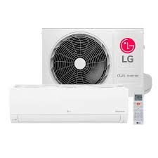

**O Ar-Condicionado: Conforto e Eficiência no Controle de Temperatura** O ar-condicionado é um equipamento amplamente utilizado nos dias de hoje, tanto em residências quanto em ambientes comerciais e industriais, proporcionando conforto térmico e qualidade de vida. Ele tem a capacidade de resfriar ou aquecer um ambiente, oferecendo condições ideais para a realização de atividades em lugares que sofrem com temperaturas extremas. Sua importância vai além do simples prazer de um clima agradável, desempenhando um papel vital na melhoria da produtividade, na conservação de alimentos e medicamentos, e até mesmo na saúde das pessoas. **Funcionamento Básico do Ar-Condicionado** O princípio básico do funcionamento do ar-condicionado está no ciclo de refrigeração. Ele utiliza um fluido refrigerante, que absorve o calor do ambiente e o dissipa externamente. O processo começa com a captação do ar quente do interior de um ambiente. O ar é puxado para o aparelho através de um ventilador, passando por um evaporador que contém o fluido refrigerante. Esse fluido absorve o calor do ar e o transforma em gás. O gás refrigerante é então comprimido e, ao passar por um condensador, libera esse calor para o ambiente externo. Esse ciclo contínuo reduz a temperatura interna do espaço. Além da função de resfriar o ar, muitos modelos modernos de ar-condicionado também oferecem a opção de aquecer o ambiente, funcionando como um aquecedor. Esse recurso é especialmente útil em regiões que enfrentam variações significativas de temperatura, permitindo o conforto em todas as estações do ano. **Benefícios do Ar-Condicionado** Os benefícios de ter um ar-condicionado são numerosos e vão muito além da simples questão do conforto térmico. Em primeiro lugar, ele é essencial para a manutenção de ambientes de trabalho saudáveis e produtivos. Em escritórios e fábricas, o calor excessivo pode causar desconforto e até reduzir a eficiência dos colaboradores. O ar-condicionado, ao manter uma temperatura estável, melhora o bem-estar dos trabalhadores, favorecendo a concentração e o desempenho. Além disso, ele também pode filtrar partículas de poeira, poluição e outros agentes alergênicos presentes no ar, melhorando a qualidade do ar respirado e ajudando a prevenir problemas respiratórios. Outro benefício importante é o impacto do ar-condicionado na preservação de alimentos e medicamentos. Em ambientes como supermercados, hospitais e farmácias, a temperatura controlada é crucial para manter a integridade de certos produtos, evitando deterioração e garantindo sua eficácia. No setor de TI, servidores e equipamentos eletrônicos também são beneficiados pelo ar-condicionado, que impede o superaquecimento e a falha de sistemas. **Tipos de Ar-Condicionado** Existem diferentes tipos de ar-condicionado, e a escolha do modelo ideal depende de fatores como o tamanho do ambiente, a necessidade de eficiência energética e o orçamento disponível. Os modelos mais comuns incluem: 1. **Ar-condicionado de janela**: Este modelo é compacto e fácil de instalar, sendo ideal para ambientes menores. 2. **Ar-condicionado split**: Consiste em duas unidades, uma interna e outra externa, oferecendo maior eficiência e menor ruído. 3. **Ar-condicionado portátil**: Prático e versátil, pode ser movido de um cômodo para outro, mas é menos eficiente para grandes espaços. 4. **Ar-condicionado central**: É a solução ideal para grandes edificações, distribuindo o ar refrigerado de forma eficiente para vários ambientes ao mesmo tempo. **Eficiência Energética e Cuidados** Embora o ar-condicionado seja indispensável para muitos, seu consumo de energia pode ser um desafio. Modelos mais antigos ou menos eficientes consomem mais eletricidade, resultando em altas contas de energia. A tecnologia tem avançado para oferecer aparelhos mais eficientes, como os modelos com selo Procel de economia de energia. Além disso, é fundamental realizar a manutenção periódica do aparelho, como a limpeza dos filtros e a verificação do fluido refrigerante, para garantir um desempenho ideal e prolongar a vida útil do equipamento. **Conclusão** O ar-condicionado desempenha um papel essencial no nosso dia a dia, não apenas oferecendo conforto térmico, mas também contribuindo para a saúde e o bem-estar. A escolha do tipo adequado e o uso responsável podem garantir que o aparelho se torne uma ferramenta eficiente, oferecendo uma temperatura agradável durante todo o ano.